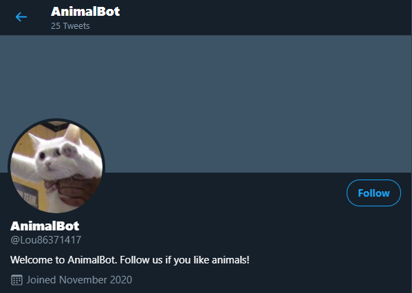

My Projects
Aframe Project: "Birthday Table"(click to view in full-screen)
360° Pre-view:
Game Project: "Murder at the Homey Side Motel"(click to play)

Project Concept:
Murder at the Homey Side Motel is a point and click murder mystery game where the user plays as the Detective, Justin Case, to solve the murder of the victim named Tanya Felling. The Detective is new to the police department, and the game begins as he arrives on the scene of the murder to assist Investigator Hawke, who is a seasoned professional. Along the way, the Detective will meet two suspects named Scott Shovely and Ray D. O’Hare. Throughout the game, the Detective will collect pieces of evidence that eventually lead him to uncover and confront the culprit of the crime.
Murder at the Homey Side Motel functions as a visual novel in the same vein as the Ace Attorney franchise or the Detective Grimoire games. With graphics inspired by comics such as the early Detective Comics and Dick Tracy comics, this game is a nod to American detective comics from the 1930s.
Experience:
The player will meet other characters and watch as the story unfolds, and the player will be given the opportunity to select pieces of evidence from the background landscapes. This will operate much like a classic point-and-click adventure game.The player will then “interrogate” the witnesses/suspects by presenting the collected evidence in order to gather more statements and facts about the case.The final portion of the game will consist of a multiple choice quiz that has the player answer questions to determine the timeline of the crime, which will allow the player to actively take the role of the detective and uncover the killer.
Technical Execution:
Murder at the Homey Side Motel is programmed in HTML, CSS, and Javascript. It capitalizes on the use of event handlers as well as multiple buttons, links, and alerts. To get started, we designed a layout for the game focusing on its UI and mechanics. Then, Cody and Tessa finalized the storyline and dialogue between characters while Lou and Lee Lee finalized all of the graphics and illustrations. By using the aforementioned programming languages, we were able to implement the prototype of Murder at the Homey Side Motel.
YouTube Video of Sample Gameplay:
Murder at the Homey Side Motel Full Playthrough"
Twitter-bot Project: "Animal Bot"(click to visit)

Introduction:
Our “AnimalBot” is made for people who like animals and pets. The Bot retweets posts
including pet pictures, and it also posts a picture of an animal with a caption,
periodically.
What does it do?
Our Bot does two things in general:
1) Retweeting posts includes keyword #pets
The bot will retweet one of the top ten most recent tweet with the #pets every 5
hours. The bot will search through the posts with keyword #pets, and select one
of the top ten most recent tweets at random, and retweet it.
2) Posting pet picture with caption
The bot will post one of 24 possible pictures of a pet with a semi-randomized
caption every 24 hours (one picture a day). The pictures are from our source
folder. The function generates a semi-randomized caption and alternative text
based on a random number generator.